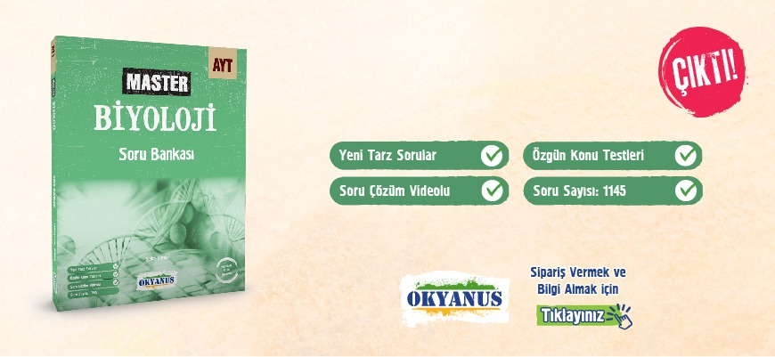

|  | |
KİTAP AÇIKLAMASI |
|
Değerli İş Ortağımız,11.SINIF MASTER FİZİK SORU BANKASI ÇOK YAKINDA!!!Kitabımızın hedefi 11.Sınıf Fizik dersini bilen ve soru çözmeye meraklı öğrencilerin farklı soru tiplerini görebilmesini sağlamak ve sonraki sene girecekleri AYT sınavında yeni nesil sorulara aşina olmalarını sağlamaktır. Master Fizik kitabımız, Milli Eğitim Bakanlığı Talim ve Terbiye Kurulunun 11.Sınıflar için yayımladığı kazanımlar dikkate alınarak ve özenle hazırlanmıştır. Bilindiği üzere ÖSYM son yıllarda daha çok okuduğunu anlamaya ve yorumlamaya yönelik sorular sormaktadır. Ezbere dayalı ve uzun işlem gerektiren soruların sayısı geçmiş yıllara göre azalmıştır. Kitabımızda fiziğin günlük hayattaki kullanımı ile ilişkili, AYT sınavında sorulması muhtemel, özgün soru tiplerine yer verdik. Sorular ÖSYM sınavlarının soru düzenine ve metinlerine uygun olacak şekilde hazırlanmıştır. Kitabımız ünitelere bölünmüş, sorular ait oldukları konuların başlığı altında verilmiştir. Testler zorluk düzeylerine göre sıralanmıştır. Kitabımız, belli bir düzeyde fizik bilgisine sahip öğrencilerin çözebileceği türde sorular içermektedir. Kitapta toplam 682 adet soru bulunmaktadır. Tüm soruların çözüm videolarına test sayfalarında yer alan kare barkodları telefondan okutarak veya bilgisayardan kare barkodların altında yer alan sayısal kodları akilliogretim.com adresindeki arama çubuğuna yazarak ulaşılmaktadır. Öğrencilerimize faydalı olmasını temenni ederiz.
|
|
Adres;İkitelli Organize Sanayi Bölgesi. Eski Turgut Özal Caddesi No:22 Başakşehir - İstanbul |
   |